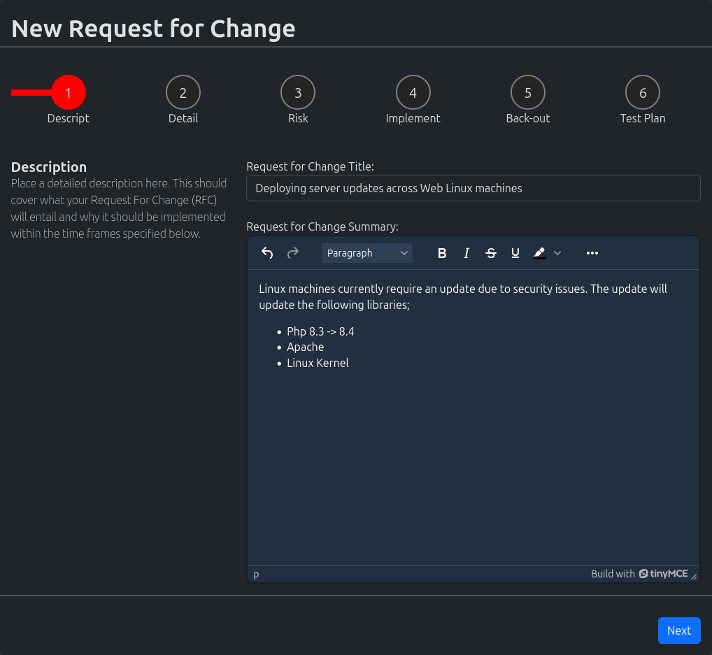
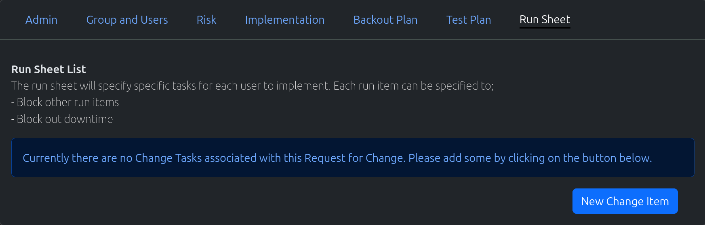
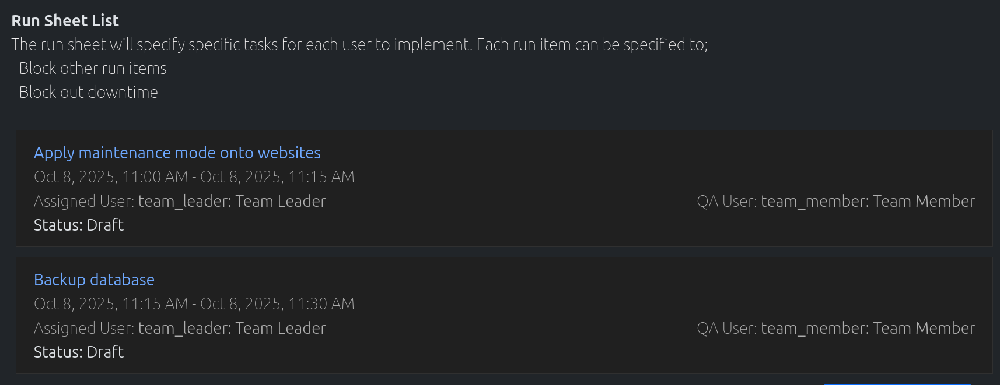

Request For Change
{kind=link}
Request for changes are used to notify all stakeholders of a deployment and it’s processes. These are usually managed by the “Change Advisory Board” and should detail out which responsibilities falls on which users. Exactly what time a task will be implemented and how long it will take.
Create New Request For Change
In the navigation menu at the top of the page. Click on the option “New Object”
In the dropdown, click on the option “New Request for Change”
The “New Request for Change” wizard will load. The steps are broken down into;
Description - A basic description/summary of the RFC and what it entails
Detail - Detailing the priorty of the RFC along with those responsible
Risk - Outlining the risk of the RFC, and the implications if RFC is not implemented
Implementation - Outline of the process around implementing
Back out - Outline of the back out plan if something goes wrong
Test plan - Outline the test plan to make sure all services are functioning
Fill out all the fields with appropriate information and submit. You will be redirected to the newly created RFC draft.
You will now be able to create the run sheet, by adding in “Change Tasks”. Once completed, submit the RFC for approval
Search for Request For Change
In the navigation menu at the top of the page. Click on the option “Find Objects”
In the dropdown, click on the option “List all Objects”
The “Search” page will load. Use the search field to search for your required request for change.
Note
Spaces are considered wildcards in this search.
Update Request For Change
Use the method above to find the appropriate Request for Change you wish to edit.
Edit the Request for change, and once completed click on the “Update Request for Change” button
Create Change Tasks
{kind=link}
Assumption: You are currently on a draft of a Request for Change
Under the “Run Sheet” section, click on the “New Change Item”
The “Change Task” wizard will appear
Fill out the form appropriately. Please note the datetime should reflect the start and end date of this particular task.
Click either of the “Add” buttons to add the change task. The newly created change task will appear in the list.
{kind=link}
Update Change Tasks
{kind=link}
Find the Change Task you would like to edit, and click on it
Change Task information page will load
Edit the fields appropriately and hit the “Save” button to update the change task
The following information for the change task is located at the bottom of the page
Change Task Links - Defines which changes tasks will be blocking this particular change task
Description - Further explaination of the change task (optional)
Misc - Defines if there is downtime, or defines who the stakeholders are for this task
To navigate back to the Request for Change, click on the “Go Back” link at the top of the page
Starting Request For Change
Assumption: You are currently on a draft of a Request for Change
To start a RFC, click on the “Submit RFC for Approval”.
The RFC is sent to all Team Leaders within the assigned groups.
At least one team leader from each group has to approve with no rejections
If there are no team leaders for the groups, an auto approval process will occur